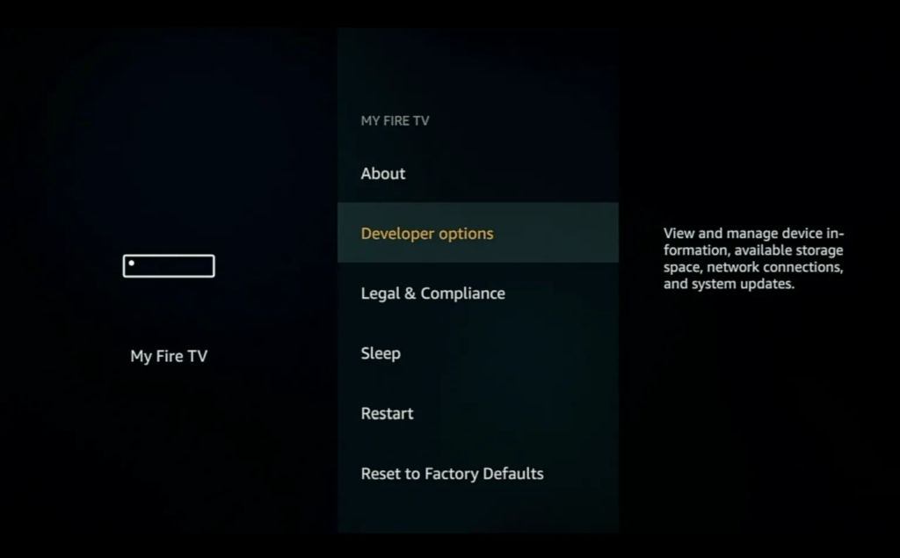

Kodi è un'applicazione gratuita per i media center open-source che può essere installata su qualsiasi dispositivo Android come Amazon Fire TV Stick, Nvidia Shield, Android Box e smartphone Android.
L'applicazione Kodi ti consente di installare diversi addons Kodi e Kodi Builds per lo streaming di Film, Serie Tv, TV dal vivo e sport dal vivo.
L'installazione dell'applicazione Kodi su Amazon Firestick e altri dispositivi Android è molto semplice e richiede 2 minuti.
Di seguito troverai la guida completa agli screenshot passo-passo su come installare Kodi su Firestick e dispositivi Android.
Quindi prendi il tuo Telecomando Fire Stick e segui-lungo!
Come installare Kodi 21.1 Omega su Firestick (ottobre 2024)
Attivare il debug e le app ADB da fonti sconosciute
Passaggio 1: vai alla schermata Home sulla tua Fire TV Stick facendo clic sul pulsante Home del tuo telecomando
Passo 2: Vai a Impostazioni nella schermata Home della tua Fire TV Stick
Passaggio 3: selezionare My Fire TV dal menu delle opzioni
Passaggio 4: selezionare Opzioni per sviluppatori
IMPORTANTE: Per favore, consulta i passaggi riportati di seguito se non vedi Opzioni per sviluppatori sullo schermo.
IMPORTANTE: Se non vedi Opzioni per sviluppatori, fai clic su Informazioni una volta sotto la sezione La Mia Fire TV.
Nota come mancano le opzioni di sviluppo dallo schermo sottostante.
Una volta che fai clic su Informazioni, il mouse su Fire TV Stick e fai clic sul pulsante OK sul tuo telecomando 7 volte per diventare uno sviluppatore.
Quando fai clic sul pulsante Indie indietro ora, vedrai che le Opzioni sviluppatore vengono visualizzate come opzione nella sezione My Fire TV.
Ora puoi selezionare Opzioni Sviluppatore.
Passaggio 5: attivando il debug di ADB e le app da fonti sconosciute
Installare il Downloader
Passo 1: Torna alla schermata Home sulla tua Fire TV Stick, premendo il tasto Home del tuo telecomando.
Passo 2: Vai a Find (Cerca)

Fai clic sul pulsante Cerca
Cerca il downloader
Passo 3: Selezionare Downloader dall'elenco delle opzioni e fare clic su Scarica. Ora Downloader si installerà sul tuo firestick
Passo 4: Clicca su Apri per aprire l'app Downloader
Passo 5: Una volta che l'app Downloader si apre, fare clic su Consenti
Fai click su OK
Come installare Kodi 21.1 Omega su Firestick
Passaggio 1: vai all'area URL in Downloader e digita 282759 quindi fare clic su Vai
Passo 2: Quando richiesto, fare clic su Installa
Ora Kodi si installerà sul tuo firestick
Come installare Backup su Kodi
Passo 1: Installa Backup su Kodi
Apri Kodi e quindi fai clic su Impostazioni
Fai click su Interface
Fai click su Language
Cerca Italian
Fai click su Italian
Torna alla pagina Sistema e fai click su Sistema
Fai click su Addon Sorgenti sconosciute
Click Si
Fai click su Addon Aggiorna addon ufficiali da
Qualsiasi repository
Torna alla pagina Sistema e fai click su Addon
Fai click su installa da repository
Addon programmi
Cerca Backup
Installa
Ok
Fai click su Configura
Fai click su Comprimi archivi
Fai click su Selezione file

Seleziona tutto e fai click su ok

Fai click su Cartella remota Sfoglia percorso remoto
Seleziona Downloader e fai click su OK
Come instalare un Backup
Torna su Downloader e metti il codice 775896
Scarica il file 202410071035.zip
Torna su Kodi su Backup e fai click su Esegui
Ripristino
Fai click su cartela 07.10.2024
Aspetta la estrazione del archivio
Fai click su Si
Si
Apri kodi e dopo che ti arriva il messagio premi Si
Aspetta la estrazione del archivio
Scegli tutto e premi OK
OK
OK

OK
Aspetta
Fai click su Si
Apri kodi

Interfaccia
Fai click su Skin

Titan Bingie Mod
SI
Aspetta
Aspetta
Buon Divertimento